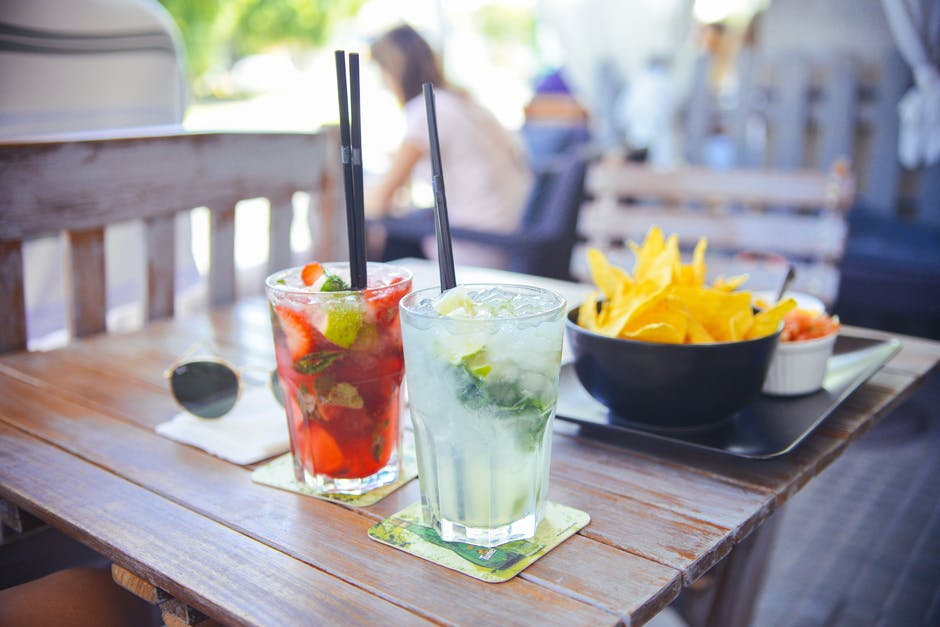

The Road to Hana: Our Craft
-

-
Our Mash
The base for Hana Gin is produced by pot distilling a fermented grain mash made up of 100% American Corn and crystal clear water from the Sierra Nevadas.
- 
-
Mastery & Approval
We have a tasting panel, including our Master Distiller and our family test each production run to ensure that our product is consistently excellent.
-

-
Ingredients
Our mantra is simplicity so we let our excellent ingredients speak for themselves. We source juniper berries from a farm in Albania that boasts the best and among the most sought after berries in the world. To complement the crisp juniper we selected orange and lemon peels as well as lavender.
-
Vacuum Distillation
Hana's botanicals are then distilled via the nuanced vacuum distillation technique. In contrast to standard gin distillation, vacuum distillation uses pressure instead of higher temperatures to extract the beautiful floral aromas, hints of crisp juniper and citrus botanicals. This is an important distinction because standard distillation techniques can often over cook the botanicals at extremely high temperatures, losing the character of the core ingredients.
-

-
Hand Bottling
We hand-bottle the premium spirit into our elegant Hana bottles, which are accented with an etched orchid. The result is a modern gin of the highest quality, created with care and an unending attention to detail. We hope you enjoy drinking Hana gin as much as we enjoy making it.